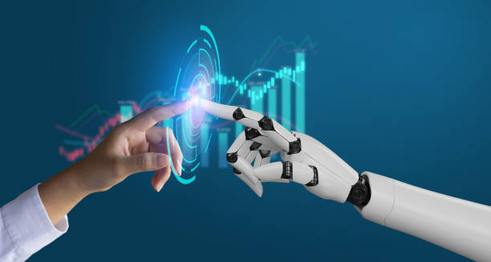
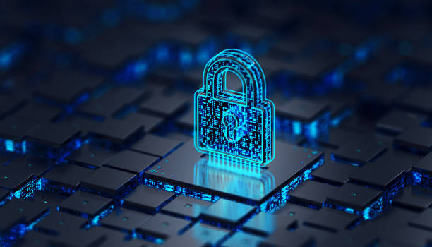
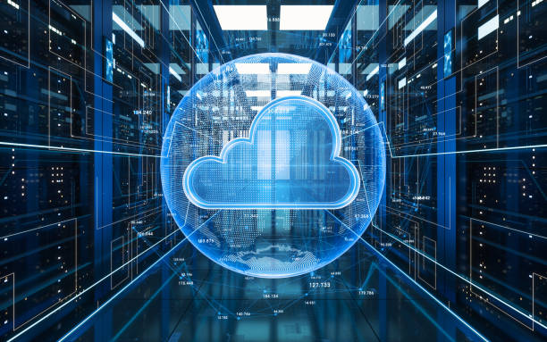

Technology News and Trends
Keeping up with the latest technology news and trends is essential in today's fast-paced digital world. Our website offers a one-stop destination for anyone looking to stay informed about the latest developments in the world of technology. Whether you are a technology professional, enthusiast, or just someone who wants to stay up-to-date on the latest technology trends, our website has something for you. Our team of technology experts and enthusiasts scours the web for the latest news and insights, covering a wide range of topics from emerging technologies like artificial intelligence and machine learning, to cybersecurity and data privacy, to the Internet of Things (IoT) and smart devices, and even blockchain technology and cryptocurrencies. With our informative articles and timely updates, you'll always be in the know about the latest technology trends that are shaping the future of our digital world.
Our team of technology experts and enthusiasts scours the web for the latest news and insights, providing our readers with timely and informative articles on topics such as:
- Artificial Intelligence & Machine Learning
- Cybersecurity And Data Privacy
- Internet of Things (IoT) and Smart Devices
- Cloud Computing And Storage
- Blockchain Technology And Cryptocurrencies
We believe that staying informed about the latest technology trends is essential for anyone who wants to stay competitive in today's fast-paced digital world. Whether you are a technology professional or just an enthusiast, our website has something for you. Subscribe to our newsletter to stay up-to-date with the latest technology news and trends.
Artificial Intelligence & Machine Learning
Artificial intelligence (AI) is a rapidly growing field of technology that has been making headlines in recent years. AI refers to the development of computer systems that can perform tasks that would normally require human intelligence, such as learning, problem-solving, and decision-making. The potential applications of AI are vast, ranging from robotics and automation to healthcare and finance. One of the most exciting aspects of AI is its ability to learn and improve over time. This is accomplished through a process known as machine learning, which involves feeding large amounts of data into algorithms and allowing them to make predictions and decisions based on that data. As the algorithms are exposed to more data, they can become more accurate and efficient, leading to improved outcomes and greater productivity.
One area where AI is already making a significant impact is in healthcare. AI-powered diagnostic tools can analyze medical images and help doctors detect diseases earlier and with greater accuracy. AI can also be used to monitor patients in real-time, alerting healthcare providers to potential problems before they become serious. Another area where AI is showing great promise is in the field of autonomous vehicles. Self-driving cars use a combination of sensors, cameras, and AI algorithms to navigate roads and make decisions in real-time. As the technology improves, self-driving cars have the potential to reduce traffic accidents, improve traffic flow, and reduce the environmental impact of transportation.
Despite the many potential benefits of AI, there are also concerns about its impact on society. One concern is that AI-powered automation could lead to job losses, particularly in industries that rely heavily on manual labor. There are also concerns about privacy and data security, as AI algorithms rely on vast amounts of personal data to function. Overall, AI is a technology with tremendous potential, and its impact on society is likely to be profound. As AI continues to evolve and improve, it will be important for individuals and organizations to stay informed about the latest developments and to work together to ensure that the benefits of AI are maximized while minimizing the risks.
Cybersecurity And Data Privacy
Cybersecurity and data privacy are two of the most important issues facing individuals and organizations today. With the rise of technology and the increasing amount of data being generated and shared online, the need to protect sensitive information has become more critical than ever before. Cybersecurity refers to the measures taken to protect computer systems, networks, and data from unauthorized access, theft, and damage. It involves using a combination of technology, processes, and training to ensure the confidentiality, integrity, and availability of information. Some of the most common cybersecurity threats include malware, phishing attacks, and social engineering.
Data privacy, on the other hand, is concerned with the protection of personal information. This includes any data that can be used to identify an individual, such as name, address, phone number, email address, social security number, and financial information. With the increasing amount of data being collected and stored by organizations, it is essential to ensure that this information is kept secure and only used for its intended purpose. In recent years, there have been numerous high-profile data breaches and cyber attacks, which have highlighted the importance of cybersecurity and data privacy. These incidents have not only resulted in financial losses but also damaged the reputation of the organizations involved.
To address these issues, there has been an increasing focus on cybersecurity and data privacy regulations. For example, the General Data Protection Regulation (GDPR) in Europe and the California Consumer Privacy Act (CCPA) in the United States aim to protect individuals' privacy rights and hold organizations accountable for their handling of personal information.
To protect yourself and your organization from cyber threats and maintain data privacy, there are several steps you can take. These include:
- To protect yourself and your organization from cyber threats and maintain data privacy, there are several steps you can take. These include:
- Use strong passwords and two-factor authentication to secure accounts.
- Be vigilant about phishing attacks and other social engineering tactics that could compromise your data.
- Only share personal information with trusted parties and avoid using public Wi-Fi networks for sensitive transactions.
- Regularly back up important data to ensure it can be recovered in the event of a cyber attack or data loss.
By taking these steps and staying informed about the latest cybersecurity and data privacy trends, you can help protect yourself and your organization from potential threats and maintain the confidentiality of sensitive information.
Internet of Things (IoT) and Smart Devices
The Internet of Things (IoT) has been one of the most talked-about technological advancements in recent years. It refers to a network of interconnected devices that are capable of exchanging data with each other over the internet. These devices, also known as smart devices, can include anything from home appliances and wearable technology to industrial machinery and vehicles. The rise of IoT has revolutionized the way we interact with technology and has paved the way for a more interconnected and automated world. One of the most significant benefits of IoT is its ability to streamline and automate processes, making our lives more convenient and efficient.
Smart home devices, for example, have become increasingly popular in recent years. These devices, such as smart thermostats and lighting systems, allow homeowners to control their home environment remotely, making it more comfortable and energy-efficient. IoT has also had a significant impact on the industrial sector, where it is used to improve manufacturing processes, optimize supply chains, and enhance product quality. For example, sensors installed in machinery can alert maintenance personnel when a component is about to fail, allowing for timely repairs and reducing downtime.
However, as with any technology, IoT comes with its own set of challenges and risks. Security is a significant concern with IoT devices, as they are vulnerable to cyber attacks and data breaches. It is essential to ensure that these devices are secure and regularly updated to prevent unauthorized access to sensitive information. In conclusion, IoT and smart devices have the potential to transform the way we live and work, but it is important to approach them with caution and to implement proper security measures. As this technology continues to evolve, it will undoubtedly have a significant impact on our lives, and it will be fascinating to see how it develops in the years to come.
Cloud Computing And Storage
Cloud computing and storage have become critical components of the modern business world. As more and more businesses rely on technology to run their operations, the need for scalable and reliable cloud computing solutions has grown exponentially. So, what exactly is cloud computing? In simple terms, cloud computing refers to the delivery of computing resources over the internet. Instead of hosting software and applications on local servers or personal computers, businesses can access a variety of services and applications over the internet. One of the biggest advantages of cloud computing is scalability. With traditional computing solutions, businesses would need to purchase and maintain expensive hardware and software to meet their computing needs. However, with cloud computing, businesses can scale their computing resources up or down on-demand, paying only for what they use.
Cloud storage, on the other hand, refers to the storage of data on remote servers that can be accessed over the internet. Instead of storing data on local hard drives or other physical storage devices, businesses can store data on the cloud, providing secure and easily accessible storage solutions. Cloud storage solutions offer many benefits, including increased flexibility and accessibility. With cloud storage, businesses can access their data from anywhere in the world, as long as they have an internet connection. This makes it easy for employees to work remotely or collaborate with others from different locations. In addition, cloud storage solutions offer increased security compared to traditional storage solutions. With the proliferation of cyber threats and data breaches, cloud storage providers have invested heavily in security measures to protect their clients' data from unauthorized access.
Another benefit of cloud storage is cost savings. With cloud storage, businesses only pay for the storage they need, rather than having to purchase and maintain expensive physical storage devices. This can save businesses a significant amount of money over time. In conclusion, cloud computing and storage have revolutionized the way businesses operate in today's digital world. With the ability to scale computing resources on-demand and store data securely in the cloud, businesses can focus on their core operations and leave the technology to the experts. As the business world continues to evolve, it's clear that cloud computing and storage will remain essential components of the modern technology landscape.
Blockchain Technology And Cryptocurrency
Blockchain technology and cryptocurrency have been making headlines in recent years, and for good reason. The rise of blockchain technology and cryptocurrencies like Bitcoin, Ethereum, and Litecoin has brought about a new era of financial innovation and security. But what exactly is blockchain technology, and how does it work? Simply put, blockchain technology is a decentralized, digital ledger that records transactions on multiple computers in a secure and transparent manner. Each block in the chain contains a record of several transactions, and once a block is added to the chain, it cannot be altered or deleted. One of the main benefits of blockchain technology is its ability to provide a secure and tamper-proof record of transactions. This makes it an ideal platform for the creation of digital currencies, or cryptocurrencies. Cryptocurrencies like Bitcoin, for example, use blockchain technology to record and verify transactions, ensuring that no one can manipulate the currency or create fake copies.
Another benefit of cryptocurrencies is their potential to provide greater financial privacy and anonymity. Unlike traditional financial transactions, which are often subject to government oversight and regulation, cryptocurrencies can be used without the need for identification or disclosure of personal information. But while the potential benefits of blockchain technology and cryptocurrencies are clear, there are also some challenges and risks to consider. One of the main concerns is the volatility and instability of cryptocurrencies, which can fluctuate wildly in value and are subject to market speculation and manipulation. There are also concerns about the security and stability of blockchain networks, particularly in the face of cyber attacks and other threats. While blockchain technology is designed to be secure and resistant to hacking, there have been instances of successful attacks and thefts in the past.
Despite these challenges, many experts believe that blockchain technology and cryptocurrencies have the potential to revolutionize the way we think about and use money. With their ability to provide greater security, privacy, and transparency, blockchain technology and cryptocurrencies could play a major role in shaping the future of finance. So if you're interested in staying ahead of the curve in the world of finance and technology, it's worth keeping an eye on blockchain technology and cryptocurrencies. Whether you're a seasoned investor or just starting to explore the world of digital currencies, there's no denying the potential of this exciting and rapidly-evolving field.
We believe that staying up-to-date with the latest technology news and trends is essential for anyone who wants to stay competitive in today's fast-paced digital world. Our website provides a one-stop-shop for all your technology news and insights, and our team of experts is dedicated to bringing you the most timely and informative articles on emerging technologies, industry news, and trends that are shaping the future of technology.
Subscribe to our newsletter to stay up-to-date with the latest technology news and trends, and join the conversation on social media to share your thoughts and insights with our community of technology enthusiasts.